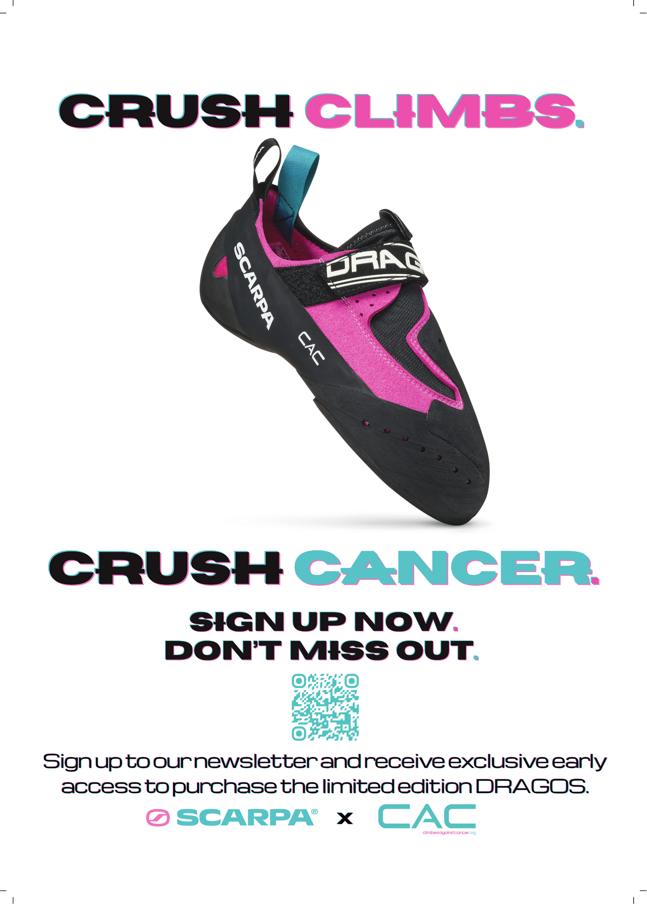

Scarpa × Climbers Against Cancer · 2026
Scarpa × CAC Drago campaign
Shared for portfolio and recruitment purposes only. Not for public consumption or redistribution.

Final print-ready poster, A3 · Open full-quality PDF
The brief
This project was a little different from the others that I've completed: a deliberate step into producing marketing assets, rather than the writing that makes up the rest of this portfolio. I contacted a charity that my employer at the time was partnered with, and asked them if they needed any help with their marketing. It made sense to work with Climbers Against Cancer; I had become an obsessive climber in October 2025, and when we started the project, I was climbing three or four times a week. This connection meant that I understood their audience very well without having to do as much research; I did, however, do a lot of work in understanding the charity and their identity. This included getting in touch with an acclaimed outdoor film producer and director to better understand some of his work with CAC from ten years ago (Wojtek Kozakiewicz was remarkably kind and helpful; I remain very grateful to him).
The basic brief wasn't particularly clear at first, largely due to the sensitive nature of the topic. Scarpa, one of the outdoor world's biggest brands, had generously given CAC a batch of Dragos, the ultra-sensitive, ultra-precise, torturously low-volume climbing shoe that had taken over the crags and gyms of the world for the past ten years or so. This limited edition version was magenta pink with teal accents - the only version of the Drago to exist in this colour. The first batch was limited to 100 pairs and sold out in 27 hours; Scarpa and CAC were set to repeat the same event in 2026, and wanted some promotional material to be made for the release of the shoe. The most important asset they needed was a poster advertising the shoes and directing people towards signing up for CAC's email newsletter. Part of the initial challenge of this project was narrowing down exactly what was needed for the poster's design. From asking the right questions, I was able to find out where the poster was going to be displayed, the nature of the collaboration between Scarpa and CAC, and most importantly, exactly what the client needed people to do as a result of seeing the poster; namely, signing up to the newsletter, which would give them early access to purchase the coveted shoes. [NB: the campaign has since expanded beyond the poster; I am about to start work on the rest of it]
Design choices
Once the brief had been clearly laid-out and established, the next step was to create a rudimentary first draft. There were a few decisions I made that I was quite pleased with when I received feedback from the client. The first was to make a Canva presentation in which I explained my creative process as I went, documenting my decisions and my thought processes. This was particularly helpful for one early design which used 'cute' versions of heraldic imagery to represent Asolo, where Scarpa is based, and Heinz Mariacher, who designed the Dragos; one trustee of the charity said that when she 'read the reasoning behind the chosen 'creatures', [she] was very impressed!' The second was to present several versions of the poster to the client side-by-side. This is, funnily enough, a sales tactic taken directly from my time working in technical outdoor retail. Often, you know exactly what works best for a customer based on their measurements/fit profile. However, it is almost always more effective to give people the impression that they have a choice - although you steer them in one direction because of your product knowledge, they feel as if they have control over the process. While this is somewhat different in graphic design, due to the subjective nature of what looks 'best', showing the client multiple options at the same time worked very well for determining what they actually wanted.
Naturally, there were various flaws with my initial design. What followed was a thoroughly enjoyable process in which I both improved various shortcomings, and iterated on existing ideas in search of something better. Some of my experiments proved to be short-lived; some were key to creating the final version. I deliberately limited the number of people who I bounced ideas off, due to the secret nature of the project; family, close friends, and the staff members of my home gym (who are close friends anyway). Some of their suggestions proved to be helpful in working out what worked and what didn't, although everyone tended to think differently about the piece. Ultimately, the only people who I really paid attention to were the trustees of the charity. The ideas that they liked the most came directly from my creative decisions; the decision to strike through certain letters and not others, the colour coordination of the full stops after the tagline and the CTA, the careful manipulation of fonts to make them closer to Scarpa's custom typeface - these were all tasks that I undertook independently because I thought it would make the poster look better.
To expand on the question of fonts briefly, I looked into Scarpa's branding and found their headline face is a bespoke typeface by Landor & Fitch, in the Microgramma/Eurostile lineage. The closest match available in Canva was Horizon for the tagline and the CTA, alongside Michroma for the information section (Michroma needed to have the letter spacing drastically reduced in order to look like the Scarpa Bold/Light custom typefaces). Another specific design choice that I was particularly proud of involved using the 'Glitch' effect in Canva's text editor. The headline of the poster uses a magenta and teal ghost-offset behind the black text; these two colours map to the shoe's suede sections and pull tabs. They're present in the strikethroughs and the punctuation; when viewed from afar, they give the text the slight appearance of floating in the air. Using the vivid colours of the Drago in subtle ways makes the shoe 'pop' and focuses attention on the product itself. Building an overall colour system also meant I could change individual elements without breaking the rules holding the design together.
Quality control
It's worth commenting on the quality control element of the work too. Print is unforgiving in a way that video isn't; once a file goes to the printer, a misaligned logo or a colour that shifts under CMYK conversion is permanent. The final stage of creating the poster was a detailed audit of the print-ready file. I used Claude for parts of this, though I deliberately didn't hand the project over and wait for an answer. LLMs, when used correctly, are extremely powerful tools that can pick up inconsistencies that would take humans days to spot. I therefore used it as a second set of eyes on specific, well-defined problems: sampling pixel colours across screenshots to match a QR code to the exact teal in the tagline, checking the strikethrough pattern was consistent across versions, and auditing the final file for print-safety issues like bottom-margin bleed and logo alignment. It caught a genuine error I'd missed - the logo lockup was sitting a few millimetres left of centre, a bug that came from aligning elements before grouping them. Additionally, I was able to spot a glaring problem and solve it long before the poster went to print. The main photo of the Drago, the most important part of the poster, had a resolution ceiling that would have made it look sub-standard if it went to print in A3. I flagged it early, emailed my contact at CAC, and secured a much higher resolution image, specifying exactly what resolution I needed; they went above and beyond, and located a 4500px CMYK production file. Anticipating the problem rather than reacting to it is the kind of project-management instinct the work depends on.
A few final issues with the design poster almost caused some small hiccups, but were thankfully resolved before they became a problem. My contact at CAC was in the process of showing the final design to the various trustees of the charity, when one of them noticed a design issue. One full stop ended up clashing with the colour system of the final design while its counterpart didn't; this broke the symmetry that the rest of the poster relied on. This kind of issue is one that requires human judgement to solve; matters of visual preference are far from objectively measurable errors. This would have been the finish line, but after climbing, I noticed another error that nobody had managed to pick up on; the 'I' in the 'SIGN UP NOW' section of the CTA was missing the strikethrough that had given character to the rest of the design. The full stop being the wrong colour would have detracted from the poster's professionalism; the missing strikethrough would have had the same effect. I identified the issue, asked my contact whether she wanted me to send a fixed version through; twenty minutes later, I sent a print-ready final version with the missing strikethrough fixed without waiting for a response. The nature of voluntary work means that you tend to be rewarded by being proactive; whether that's being the one to get in touch with the charity in the first place, or the last one to spot a crucial error just before the asset goes to print.
The process, slide by slide
I documented the creative process as I went, in a presentation shared with the client. Move through it below to see how the design developed from the first rough drafts to the final print-ready poster.
Use the arrows or your keyboard's ← → keys. Click a slide to enlarge.